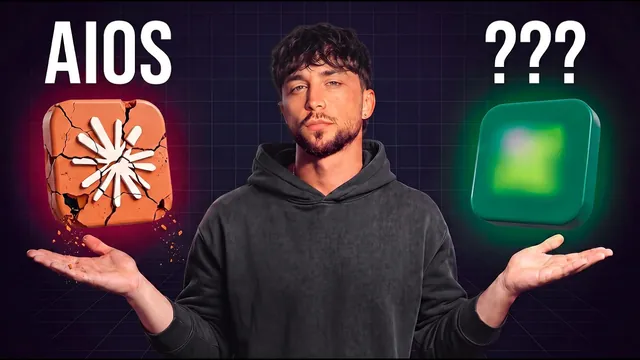

클로드 코드 기반 AI OS, 끝이 보인다

원본 영상 보기 →
- 커스텀 AI OS는 대중 시장에 못 간다 — 통합 플랫폼으로 수렴한다
- 떠난 뒤 고객이 스스로 굴릴 수 있느냐가 서비스 설계의 핵심 기준이다
- 기본 제공 스킬·연동이 곧 도입 속도다
한 줄 요약
지난 4개월간 기업 현장에서 Claude Code 기반 AI 운영체제(AI OS)를 직접 구축해온 Liam Ottley가, 이 방식이 설정 속도·교육 부담·확장 난이도 때문에 대중 시장에 못 간다고 판단하고, 그 세 문제를 하나로 묶은 플랫폼 Kylon으로 갈아타는 이유와 실제 온보딩 과정을 보여주는 영상이다(Kylon 협찬).
전체 내용 정리
AI OS란 무엇이고 왜 만들었나
Liam은 지난 4개월간 케이프타운·발리·몬테네그로에서 기업 현장 및 그룹 세션으로 총 50명 넘는 창업자에게 Claude Code AI OS를 세팅했다. AI OS는 사업의 맥락과 데이터·연동을 한 작업 공간에 연결하고, 그 위에서 에이전트·자동화·앱을 빠르게 만들 수 있게 하는 유연한 환경이다. 그는 처음에 보안 폴더 구조로 시작해 컨텍스트 OS(사업주의 맥락 수집), 데이터 OS(데이터 소스 연결), 생산성 OS, 인텔리전스 OS(회의 녹취 수집)를 만들었다. 이 개념 자체는 그대로 유지되지만, 거기에 도달하는 방식이 바뀌고 있다.
왜 커스텀 Claude Code AI OS에서 물러서나 — 세 가지 문제
이건 "다시는 안 쓴다"가 아니라 "공이 갈 곳으로 스케이트를 탄다"는 얘기라고 전제한다. 이 흐름은 AI 업계에서 반복돼왔다. 사람들이 랩보다 앞서 커스텀 지식 챗봇을 만들었더니 GPTs가 나와 한 세대의 AI 스타트업을 쓸어버린 것과 같다. 지금은 그 자리를 스타트업들이 노린다.
첫째, 설정 속도. 창업자 한 명을 좋은 템플릿에 올리는 데 하루가 걸린다. API 키를 모으고, 맥락을 세팅하고, ChatGPT에서 내보내기를 하고, 질문지를 돌린다.
둘째, 교육 부담. 하루를 들여 만들어준 시스템이 얼마나 강력한지 사업주가 이해하게 만들어야 한다. 스킬, 컨텍스트 관리 시스템이 다 들어 있는데, Claude Code에서 AI OS를 쓰는 법을 사업주에게 넘길 때 그는 불안하다. 자기 서비스는 상시 지원형이 아니라서, 떠난 뒤 고객이 제 가치를 못 뽑을까 걱정한다. (에이전시처럼 계속 관여하는 모델이라면 긴 교육 시간이 오히려 장점일 수 있다.)
셋째, 확장(빌드) 난이도. 사업주가 "이런 걸 만들고 싶다"고 말로 요청해 에이전트·자동화·앱·데이터 구조를 만들게 하려면, 커스텀 환경에서는 호스팅·유지보수·개선까지 기술 학습 곡선이 크다. 템플릿에 기본 VPS·텔레메트리를 박아둘 수는 있지만, 대다수 사업주에게 충분히 깔끔하게 관리되지 않는다.
그의 목표는 "7개월치 AI 진전을 7일로" 압축하고, 떠난 뒤 고객이 스스로 관리하게 하는 것이다.
해법 — Kylon
Kylon은 AI OS의 핵심 조각을 한곳에 모은다. Liam의 비유로는 "팀 커뮤니케이션용 Slack + 에이전트용 n8n + 그 위에 Lovable 같은 빌더"다. 사람과 에이전트 팀이 같은 채널(Kylon에서는 '룸')에서 함께 일하고, 에이전트끼리도 대화한다. 자체 데이터베이스·데이터 구조를 만들고 그 위에 앱을 바이브 코딩할 수 있다. 에이전시 관점에서 가장 중요한 건 CLI가 있다는 점이다. 현장에서 UI를 클릭하지 않고 CLI로 워크스페이스 구조·에이전트·권한·스킬을 계획하고 밀어 넣을 수 있고, 이후에도 프로그래밍 방식으로 고객 워크스페이스를 관리할 수 있다.
온보딩 데모
Kylon에 가입하면(Liam 링크로는 30일 무료, 이후 월 100달러) 온보딩 어시스턴트가 안내한다. 에이전트에게 이름과 성향을 정해주고, 회사 URL을 주면 웹사이트를 스크랩하고 LinkedIn 등 소셜 프로필까지 딥 리서치를 돌려 "이 회사가 무엇을 하고 누구를 상대하는지"를 맥락으로 채운다 — 커스텀 세팅의 컨텍스트 OS와 1:1로 대응한다. 이어 음성 에이전트 또는 메시지로 질문지를 돌려 맥락을 다듬는다.
그다음 데이터 OS로 넘어가 플랫폼을 연결한다. YouTube·Gmail 연결이 클릭 몇 번으로 끝난다(구글 클라우드로 직접 하면 30분씩 걸릴 일이다). 연결된 소스에서 정보를 더 끌어와 맥락을 보강하고, "룸"을 프로그래밍 방식으로 생성해준다. 예로 유튜브에서 "makeover 첫 두 편이 47일 간격이었다, 목표와 현재 사이에 큰 격차가 있다"를 스스로 짚어낸다.
콘텐츠 엔진 룸에서 관리자 에이전트(Hugh Jackman)가 다른 채널로 메시지를 쏘고, 에피소드 파이프라인 트래커 앱과 주간 채널 성과 브리핑 자동화를 만든다. 앱을 뒷받침할 데이터 구조(episodes 테이블)를 스스로 만들고 소스에서 데이터를 직접 채운다. 새 에이전트(chief content officer "Wayno")를 만들 때, 기본 에이전트에 이미 Apify·Apollo·디자인 시스템·브라우저 유즈·소셜 스크래핑·Google Trends·Kylon API 스킬이 스택돼 있고, 유료 도구 사용량도 구독에 포함돼 별도 결제가 필요 없다. 자기 스킬(zip)을 채팅에 넣어 워크스페이스 전체에 설치하고 에이전트에 연결할 수도 있다. 만든 에이전트는 룸의 자동화로 예약 실행에 걸 수 있고, 트리거(예: Sentry 알림 이메일)가 들어오면 이메일 에이전트가 dev 채널로 넘기고 CTO 에이전트가 분석해 엔지니어 에이전트에게 수정과 PR을 시키고 승인을 기다리는 식의 라우팅까지 가능하다. Liam은 컨텍스트·연동·에이전트·앱·자동화 세팅을 약 20~30분에 마쳤다.
결론 — 에이전시의 다음 길
Liam은 AI 에이전시의 다음 단계가 이런 플랫폼 하나에 특화해 짧은 시간에 큰 성과를 내주는 것이라고 본다. 링크의 특별 혜택과 데모 콜을 안내하며, 3년 전이었다면 직접 다 만들어야 했을 것을 이제는 훨씬 빠르게 도달할 수 있다고 정리한다.
핵심 인사이트
- 커스텀 AI OS는 대중 시장에 못 간다 — 통합 플랫폼으로 수렴한다: 설정에 하루, 교육에 또 며칠, 확장에 기술 학습 곡선. 이 세 부담 때문에 대다수 사업주는 커스텀 Claude Code 환경을 감당 못 한다. "왜 중요한가" — 챗봇→GPTs처럼, 앞서 만든 커스텀 구축물이 통합 제품에 흡수되는 패턴이 또 반복되고 있다.
- 떠난 뒤 고객이 스스로 굴릴 수 있느냐가 서비스 설계의 핵심 기준이다: 상시 지원형이 아니라면 자기관리 가능성이 곧 가치 실현 여부를 가른다. 에이전시처럼 계속 관여하는 모델은 반대로 긴 교육 시간이 장점이 된다 — 어느 쪽이든 관계 모델을 먼저 정해야 한다.
- 기본 제공 스킬·연동이 곧 도입 속도다: Apify·Apollo·디자인 시스템·브라우저 유즈가 기본 탑재되고 유료 도구 비용이 구독에 포함되면, API 키 수집과 스킬 제작이라는 최대 병목이 사라진다.
오늘 당장 해볼 것
- 우리가 자동화 업체나 컨설턴트에게 맡길 때 "구축을 끝내고 떠난 뒤, 우리 직원만으로 이걸 수정·확장할 수 있는가"를 계약 조건에 명시한다. 불가능하다면 상시 지원 계약인지, 자기관리형인지 관계 모델을 먼저 합의한다.
- 지금 검토 중인 AI 도입안이 "커스텀으로 다 짜는" 방식이라면, 컨텍스트·데이터 연결·에이전트·자동화가 한 플랫폼에 묶인 통합형 대안이 있는지 업체에 물어보고 도입 기간·교육 시간·월 비용을 나란히 비교한다.
- 우리 회사의 반복 업무 중 "무슨 일이 생기면 → 누구에게 알리고 → 무엇을 하게 한다"로 적을 수 있는 흐름(예: 장애 알림 메일 → 담당자 확인 → 수정 요청)을 하나 골라, 트리거·경로·승인 지점을 문서 한 장으로 정리한다. 나중에 자동 라우팅으로 넘길 단위가 된다.